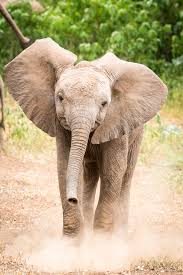

Elephants, the largest existing land animals, are mammals of the family Elephantidae. Three species are currently recognised: the African bush elephant, the African forest elephant, and the Asian elephant. Elephantidae is the only surviving family of the order Proboscidea; extinct members include the mastodons. The family Elephantidae also contains several now-extinct groups, including the mammoths and straight-tusked elephants. African elephants have larger ears and concave backs, whereas Asian elephants have smaller ears, and convex or level backs. Distinctive features of all elephants include a long trunk, tusks, large ear flaps, massive legs, and tough but sensitive skin. The trunk, also called a proboscis, is used for breathing, bringing food and water to the mouth, and grasping objects. Tusks, which are derived from the incisor teeth, serve both as weapons and as tools for moving objects and digging. The large ear flaps assist in maintaining a constant body temperature as well as in communication. The pillar-like legs carry their great weight.
Elephants are scattered throughout sub-Saharan Africa, South Asia, and Southeast Asia and are found in different habitats, including savannahs, forests, deserts, and marshes. They are herbivorous, and they stay near water when it is accessible. They are considered to be keystone species, due to their impact on their environments. Other animals tend to keep their distance from elephants; the exception is their predators such as lions, tigers, hyenas, and wild dogs, which usually target only young elephants (calves). Elephants have a fission–fusion society, in which multiple family groups come together to socialise. Females (cows) tend to live in family groups, which can consist of one female with her calves or several related females with offspring. The groups, which do not include bulls, are led by the (usually) oldest cow, known as the matriarch.
